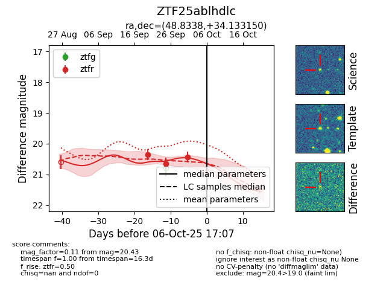
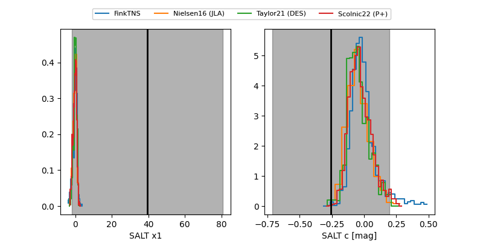

FINK: ZTF25ablhdlc
Lasair: ZTF25ablhdlc
ALeRCE: ZTF25ablhdlc
ZTF25ablhdlc (ztf,fink)
equatorial (ra, dec) = (48.8338,+34.13315)
galactic (l, b) = (154.0696,-19.89611)


last ztfr=20.43
3 ztfr detections